건설재료시험기사 (2018-09-15 기출문제)
1과목: 콘크리트공학
1. 서중 콘크리트에 대한 설명으로 틀린 것은?
- 콘크리트 재료는 온도가 낮아질 수 있도록 하여야 한다.
- 콘크리트를 타설할 때의 콘크리트 온도는 35℃ 이하여야 한다.
- 수화작용에 필요한 수분증발을 방지하기 위해 촉진제를 사용하는 것을 원칙으로 한다.
- 콘크리트를 타설하기 전에 지반과 거푸집 등을 조사하여 콘크리트로부터의 수분 흡수로 품질변화의 우려가 있는 부분은 습윤상태로 유지하여야 한다.
(정답률: 80%)

2. 콘크리트의 블리딩 시험방법(KS F 2414)에 대한 설명으로 틀린 것은?
- 시험 중에는 실온(20±3)℃로 한다.
- 블리딩 시험은 굵은 골재의 최대치수가 40mm 이하인 경우에 적용한다.
- 최초로 기록한 시각에서부터 60분 동안 10분마다, 콘크리트 표면에 스며 나온 물을 빨아낸다.
- 콘크리트를 블리딩 용기에 채울 때 콘크리트 표면이 용기의 가장자리에서 (30±3)mm 높아지도록고른다.
(정답률: 68%)
3. 일반콘크리트의 배합설계에 대한 설명으로 틀린 것은?
- 제방화학제가 사용되는 콘크리트의 물-결합재비는 45% 이하로 한다.
- 콘크리트의 탄산화 저항성을 고려하여 물-결합재비를 정할 경우 60% 이하로 한다.
- 콘크리트의 수밀성을 기준으로 물-결합재비를 정할 경우 그 값은 50% 이하로 한다.
- 구조물에 사용된 콘크리트의 압축강도가 설계기준압축강도보다 작아지지 않도록 현장 콘크리트의 품질변동을 고려하여 콘크리트의 배합강도를 설계기준압축강도 보다 충분히 크게 정하여야 한다.
(정답률: 70%)
4. 방사선 차폐용 콘크리트에 대한 설명으로 틀린 것은?
- 일반적인 경우 슬럼프는 150mm 이하로 하여야 한다.
- 주로 생물체의 방호를 위하여 X선, γ선 및 중성자선을 차폐할 목적으로 사용된다.
- 방사선 차폐용 콘크리트는 열전도율이 작고, 열팽창률이 커야 하므로 밀도가 낮은 골재를 사용하여야 한다.
- 물-결합재비는 50%이하를 원칙으로 하고, 워커빌리티 개선을 위하여 품질이 입증된 혼화제를 사용할 수 있다.
(정답률: 70%)
5. 한중콘크리트에서 주위의 온도가 2℃이고, 비볐을 때의 콘크리트의 온도가 26℃이며, 비빈 후부터 타설이 끝났을 때까지 90분이 소요되었다면, 타설이 끝났을 때의 콘크리트의 온도는?
- 20.6℃
- 21.6℃
- 22.6℃
- 23.6℃
(정답률: 63%)
6. 프리스트레스트 콘크리트(PSC)를 철근콘크리트(RC)와 비교할 때 사용재료와 역학적 성질의 특징에 대한 설명으로 틀린 것은?
- 부재 전단면의 유효한 이용
- 뛰어난 부재의 탄성과 복원성
- 긴장재로 인한 자중과 전단력의 증가
- 고강도 콘크리트와 고강도 강재의 사용
(정답률: 62%)
7. 경량골재 콘크리트에 대한 설명으로 틀린 것은?
- 일반적으로 기건 단위질량이 1.4~2.0T/m3 범위의 콘크리트를 말한다.
- 콘크리트의 수밀성을 기준으로 물-결합재비를 정할 경우에는 50% 이하를 표준으로 한다.
- 천연경량골재는 인공경량골재에 비해 입자의 모양이 좋고 흡수율이 작아 구조용으로 많이 쓰인다.
- 경량골재 콘크리트는 보통콘크리트보다 동결융해에 대한 저항성이 상당히 나쁘므로 시공시 유의하여야 한다.
(정답률: 64%)
8. 굵은 골재의 최대치수에 따른 콘크리트 펌프 압송관의 호칭치수에 대한 설명으로 옳은 것은?
- 굵은 골재의 최대치수가 25mm일 때 압송관의 호칭치수는 100mm 이상이어야 한다.
- 굵은 골재의 최대치수가 20mm일 때 압송관의 호칭치수는 100mm 이하여야 한다.
- 굵은 골재의 최대치수가 20mm일 때 압송관의 호칭치수는 125mm 이하여야 한다.
- 굵은 골재의 최대치수가 40mm일 때 압송관의 호칭치수는 80mm 이상이어야 한다.
(정답률: 62%)
9. 콘크리트의 탄산화에 대한 설명으로 틀린 것은?
- 탄산화가 진행된 콘크리트는 알칼리성이 약화되어 콘크리트 자체가 팽창하여 파괴된다.
- 철근주위를 둘러싸고 있는 콘크리트가 탄산화하여 물과 공기가 침투하면 철근을 부식시킨다.
- 굳은 콘크리트는 표면에서 공기 중의 이산화탄소의 작용을 받아 수산화칼슘이 탄산칼슘으로 바뀐다.
- 탄산화의 판정은 페놀프탈레인 1%의 알코올용액을 콘크리트의 단면에 뿌려 조사하는 방법이 일반적이다.
(정답률: 57%)
10. 콘크리트의 타설에 대한 설명으로 틀린 것은?
- 타설한 콘크리트를 거푸집 안에서 횡방향으로 이동시켜서는 안 된다.
- 콘크리트는 그 표면이 한 구획 내에서는 거의 수평이 되도록 타설하는 것을 원칙으로 한다.
- 거푸집의 높이가 높아 슈트 등을 사용하는 경우 배출구와 타설 면까지의 높이는 1.5m이하를 원칙으로 한다.
- 콘크리트를 2층 이상으로 나누어 타설할 경우, 상층의 콘크리트 타설은 하층의 콘크리트가 굳은 후 해야 한다.
(정답률: 83%)
11. 콘크리트 구조물의 온도균열에 대한 시공상의 대책으로 틀린 것은?
- 단위시멘트량을 적게 한다.
- 1회의 콘크리트 타설 높이를 줄인다.
- 수축이음부를 설치하고, 콘크리트 내부온도를 낮춘다.
- 기존의 콘크리트로 새로운 콘크리트의 온도에 따른 이동을 구속시킨다.
(정답률: 61%)
12. 시방배합을 통해 단위수량 174kg/m3, 시멘트량 369kg/m3, 잔골재 702kg/m3, 굵은골재 1049kg/m3을 산출하였다. 현장골재의 입도를 고려하여 현장배합으로 수정한다면 잔골재와 굵은 골재의 양은? (단, 현장 잔골재 중 5mm체에 남는 양이 10%, 굵은 골재 중 5mm체를 통과한 양이 5%, 표면수는 고려하지 않는다.)
- 잔골재 : 802kg/m3, 굵은 골재 : 949kg/m3
- 잔골재 : 723kg/m3, 굵은 골재 : 1028kg/m3
- 잔골재 : 637kg/m3, 굵은 골재 : 1114kg/m3
- 잔골재 : 563kg/m3, 굵은 골재 : 1188kg/m3
(정답률: 73%)
13. 콘크리트의 강도에 영향을 미치는 요인에 대한 설명으로 옳지 않은 것은?
- 성형시에 가압양생하면 콘크리트의 강도가 크게 된다.
- 물-결합재비가 일정할 때 공기량이 증가하면 압축강도는 감소한다.
- 부순돌을 사용한 콘크리트의 강도는 강자갈을 사용한 콘크리트의 강도보다 크다.
- 물-결합재비가 일정할 때 굵은 골재의 최대치수가 클수록 콘크리트의 강도는 커진다.
(정답률: 60%)
14. 23회의 압축강도 시험실적으로부터 구한 표준편차가 5MPa이었다. 콘크리트의 설계기준압축강도가 40MPa인 경우 배합강도는? (단, 시험횟수 20회일 때의 표준편차의 보정계수는 1.08이고, 25회일 때의 표준편차의 보정계수는 1.03이다.)
- 47.1MPa
- 47.7MPa
- 48.3MPa
- 48.8MPa
(정답률: 62%)
15. 고압증기양생한 콘크리트의 특징에 대한 설명으로 틀린 것은?
- 고압증기양생한 콘크리트의 수축률은 크게 감소된다.
- 고압증기양생한 콘크리트의 크리프는 크게 감소된다.
- 고압증기양생한 콘크리트의 외관은 보통양생한 포틀랜드시멘트 콘크리트 색의 특징과 다르며, 흰색을 띤다.
- 고압증기양생한 콘크리트는 보통양생한 콘크리트와 비교하여 철근과의 부착강도가 약 2배정도가 된다.
(정답률: 82%)
16. 소요의 품질을 갖는 프리플레이스트 콘크리트를 얻기 위한 주입 모르타르의 품질에 대한 설명으로 틀린 것은?
- 굳지 않은 상태에서 압송과 주입이 쉬워야 한다.
- 주입되어 경화되는 사이에 블리딩이 적으며, 팽창하지 않아야 한다.
- 경화 후 충분한 내구성 및 수밀성과 강재를 보호하는 성능을 가져야 한다.
- 굵은 골재의 공극을 완벽하게 채울 수 있는 양호한 유동성을 가지며, 주입 작업이 끝날때까지 이 특성이 유지되어야 한다.
(정답률: 56%)
17. 콘크리트의 워커빌리티 측정 방법이 아닌 것은?
- 지깅 시험
- 흐름 시험
- 슬럼프 시험
- Vee-Bee 시험
(정답률: 74%)
18. 신축이음의 내용으로 적절하지 않은 것은?
- 신축이음에는 필요에 따라 이음재, 지수판 등을 배치하여야 한다.
- 신축이음은 양쪽의 구조물 혹은 부재가 구속되지 않는 구조이어야 한다.
- 신축이음에는 인장철근 및 압축철근을 배치하여 전단력에 대하여 보강하여야 한다.
- 신축이음의 단차를 피할 필요가 있는 경우에는 전단 연결재를 사용하는 것이 좋다.
(정답률: 52%)
19. 프리스트레싱할 때의 콘크리트 압축강도에 대한 설명으로 옳은 것은?
- 프리텐션 방식에 있어서 콘크리트의 압축강도는 40MPa 이상이어야 한다.
- 포스트텐션 방식에 있어서 콘크리트의 압축강도는 20MPa 이상이어야 한다.
- 프리스트레싱을 할 때의 콘크리트의 압축강도는 프리스트레스를 준 직후, 콘크리트에 일어나는 최대 인장응력의 2.5배 이상이어야 한다.
- 프리스트레싱을 할 때의 콘크리트의 압축강도는 프리스트레스를 준 직후, 콘크리트에 일어나는 최대 압축응력의 1.7배 이상이어야 한다.
(정답률: 65%)
20. 콘크리트의 받아들이기 품질 검사항목이 아닌 것은?
- 공기량
- 평판재하
- 슬럼프
- 펌퍼빌리티
(정답률: 74%)
2과목: 건설시공 및 관리
21. 철륜 표면에 다수의 돌기를 붙여 접지면적을 작게 하여 접지압을 증가시킨 다짐기계로 일반성토 다짐보다 비교적 함수비가 많은 점질토 다짐에 적합한 롤러는?
- 진동 롤러
- 탬핑 롤러
- 타이어 롤러
- 로드 롤러
(정답률: 76%)
22. 콘크리트 포장에서 아래의 표에서 설명하는 현상은?
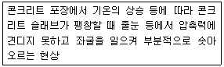
- spalling
- blowgup
- pumping
- reflection crack
(정답률: 73%)
23. 다음 중 표면차수벽 댐을 채택할 수 있는 조건이 아닌 것은?
- 대량의 점토 확보가 용이한 경우
- 추후 댐 높이의 증축이 예상되는 경우
- 짧은 공사기간으로 급속시공이 필요한 경우
- 동절기 및 잦은 강우로 점토시공이 어려운 경우
(정답률: 50%)
24. 로드 롤러를 사용하여 전압횟수 4회, 전압포설 두께 0.2m, 유효 전압폭 2.5m, 전압작업 속도를 3km/h로 할 때 시간당 작업량을 구하면? (단, 토량환산계수는 1, 롤러의 효율은 0.8을 적용한다.)
- 300m3/h
- 251m3/h
- 200m3/h
- 151m3/h
(정답률: 56%)
25. 터널공사에 있어서 TBM공법의 장점을 설명한 것으로 틀린 것은?
- 갱내의 공기오염도가 적다.
- 복잡한 지질변화에 대한 적응성이 좋다.
- 라이닝의 두께를 얇게 할 수 있다.
- 동바리공이 간단해진다.
(정답률: 69%)
26. 어떤 공사에서 하한 규격값 SL=12MPa로 정해져 있다. 측정결과 표준편차의 측정값 1.5MPa, 평균값
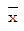
=18MPa이었다. 이때 규격값에 대한 여유값은?- 0.4MPa
- 0.8MPa
- 1.2MPa
- 1.5MPa
(정답률: 30%)
27. 현장 콘크리트 말뚝의 장점에 대한 설명으로 틀린 것은?
- 지층의 깊이에 따라 말뚝길이를 자유로이 조절할 수 있다.
- 말뚝선단에 구근을 만들어 지지력을 크게 할 수 있다.
- 현장 지반 중에서 제작·양생되므로 품질관리가 쉽다.
- 말뚝재료의 운반에 제한이 적다.
(정답률: 62%)
28. 암거의 매설깊이는 1.5m, 암거와 암거상부 지하수면 최저점과의 거리가 10cm, 지하수면의 경사가 4.5°이다. 지하수면의 깊이를 1m로 하려면 암거간 매설거리는 얼마로 해야 하는가?
- 4.8m
- 10.2m
- 15.2m
- 61m
(정답률: 48%)
29. 성토높이 8m인 사면에서 비탈구배가 1:1.3일 때 수평거리는?
- 6.2m
- 8.3m
- 9.4m
- 10.4m
(정답률: 65%)
30. 아스팔트 포장의 표면에 부분적인 균열, 변형, 마모 및 붕괴와 같은 파손이 발생할 경우 적용하는 공법을 표면처리라고 하는데 다음 중 이 공법에 속하지 않는 것은?
- 실 코트(Seal Coat)
- 카펫 코트(Carpet Coat)
- 택 코트(Tack Coat)
- 포그 실(Fog Seal)
(정답률: 50%)
31. 아래에서 설명하는 심빼기 발파공은?
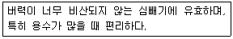
- 노 컷
- 벤치 컷
- 스윙 컷
- 피라미드 컷
(정답률: 60%)
32. 샌드드레인(sand drain) 공법에서 영향원의 지름을 de, 모래말뚝의 간격을 d라 할 때 정사각형의 모래말뚝 배열 식으로 옳은 것은?
- de = 1.0d
- de = 1.⑤d
- de = 1.08d
- de = 1.13d
(정답률: 67%)
33. 아래의 표와 같이 공사 일수를 견적한 경우 3점 견적법에 따른 적정 공사 일수는?
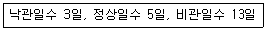
- 4일
- 5일
- 6일
- 7일
(정답률: 71%)
34. 흙의 성토작업에서 아래 그림과 같은 쌓기 방법에 대한 설명으로 틀린 것은?
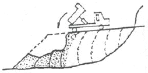
- 전방쌓기법이다.
- 공사비가 싸고 공정이 빠른 장점이 있다.
- 주로 중요하지 않은 구조물의 공사에 사용된다.
- 층마다 다소의 수분을 주어서 충분히 다진 후 다음 층을 쌓는 공법이다.
(정답률: 66%)
35. 교량의 구조는 상부구조와 하부구조로 나누어진다. 다음 중 상부구조가 아닌 것은?
- 교대(abutment)
- 브레이싱(bracing)
- 바닥판(bridge deck)
- 바닥틀(floor system)
(정답률: 59%)
36. 보통토(사질토)를 재료로 하여 36000m3의 성토를 하는 경우 굴착 및 운반 토량(m3)은 얼마인가? (단, 토량환산계수 L=1.25, C=0.90)
- 굴착토량 = 40000, 운반토량 = 50000
- 굴착토량 = 32400, 운반토량 = 4⑤00
- 굴착토량 = 28800, 운반토량 = 50000
- 굴착토량 = 32400, 운반토량 = 45000
(정답률: 63%)
37. 어스 앵커 공법에 대한 설명으로 틀린 것은?
- 영구 구조물에도 사용하나 주로 가설구조물의 고정에 많이 사용한다.
- 앵커를 정착하는 방법은 시멘트 밀크 또는 모르타르를 가압으로 주입하거나 앵커 코어등을 박아 넣는다.
- 앵커 케이블은 주로 철근을 사용한다.
- 앵커의 정착대상 지반을 토사층으로 가정하고 앵커 케이블을 사용하여 긴장력을 주어 구조물을 정착하는 공법이다.
(정답률: 62%)
38. 보강토 옹벽에 대한 설명으로 틀린 것은?
- 기초지반의 부등침하에 대한 영향이 비교적 크다.
- 옹벽시공 현장에서의 콘크리트 타설 작업이 필요 없다.
- 전면판과 보강재가 제품화 되어 있어 시공속도가 빠르다.
- 전면판과 보강재의 연결 및 보강재와 흙사이의 마찰에 의하여 토압을 지지한다.
(정답률: 54%)
39. 직접기초의 터파기를 하고자 할 때 아래 조건과 같은 경우 가장 적당한 공법은?
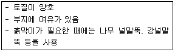
- 오픈 컷 공법
- 아일랜드 공법
- 어더피닝 공법
- 트랜치컷 공법
(정답률: 57%)
40. 버킷 준설선(Bucket dredger)의 특징으로 옳은 것은?
- 소규모 준설에서 주로 이용된다.
- 예인선 및 토운선이 필요없다.
- 비교적 광범위한 토질에 적합하다.
- 암석 및 굳은 토질에 적합하다.
(정답률: 51%)
3과목: 건설재료 및 시험
41. 석재를 모양 및 치수에 의한 구분할 때 아래 표의 내용에 해당하는 것은?
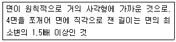
- 각석
- 판석
- 견치석
- 사고석
(정답률: 56%)
42. 다음 ( )안에 들어갈 말로 옳은 것은?
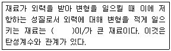
- 강도(strength)
- 강성(stiffness)
- 인성(toughness)
- 취성(brittleness)
(정답률: 63%)
43. 수지 혼입 아스팔트의 성질에 대한 설명으로 틀린 것은?
- 신도가 크다.
- 점도가 높다.
- 감온성이 저하한다.
- 가열 안정성이 좋다.
(정답률: 48%)
44. 굵은 골재로서 최대치수가 40mm 정도인 것으로 체가름 시험을 하고자 할 때 시료의 최소 건조 질량으로 옳은 것은?
- 2kg
- 4kg
- 6kg
- 8kg
(정답률: 47%)
45. 콘크리트용 혼화재료로 사용되는 고로슬래그 미분말에 대한 설명 중 틀린 것은?
- 고로슬래그 미분말을 혼화재로 사용한 콘크리트는 염화물이온 침투를 억제하여 철근부식 억제효과가 있다.
- 고로슬래그 미분말을 사용한 콘크리트는 보통 콘크리트보다 콘크리트 내부의 세공경이 작아져 수밀성이 향상된다.
- 고로슬래그 미분말은 플라이애시나 실리카퓸에 비해 포틀랜드시멘트와의 비중차가 작아 혼화재로 사용할 경우 혼합 및 분산성이 우수하다.
- 고로슬래그 미분말의 혼합율을 시멘트 중량에 대하여 70% 혼합한 경우 탄산화속도가 보통콘크리트의 1/2정도로 감소되어 내구성이 향상된다.
(정답률: 41%)
46. 금속재료의 특징에 대한 설명으로 옳지 않은 것은?
- 연성과 전성이 작다.
- 금속 고유의 광택이 있다.
- 전기, 열의 전도율이 크다.
- 일반적으로 상온에서 결정형을 가진 고체로서 가공성이 좋다.
(정답률: 66%)
47. 콘크리트용 강섬유에 대한 설명으로 틀린 것은?
- 형상에 따라 직선섬유와 이형섬유가 있다.
- 강섬유의 평균인장강도는 200MPa 이상이 되어야 한다.
- 강섬유는 16℃ 이상의 온도에서 지름 안쪽 90° 방향으로 구부렸을 때 부러지지 않아야 한다.
- 강섬유의 인장강도 시험은 강섬유 5ton마다 10개 이상의 시료를 무작위로 추출해서 시행한다.
(정답률: 63%)
48. 목재의 건조법 중 자연건조법의 종류에 해당하는 것은?
- 끓임법
- 수침법
- 열기건조법
- 고주파건조법
(정답률: 70%)
49. 사용하는 시멘트에 따른 콘크리트의 1일 압축강도가 작은 것에서 큰 순서로 옳은 것은?
- 조강포틀랜트 시멘트 → 초조강포틀랜드 시멘트 → 초속경 시멘트 → 고로슬래그 시멘트
- 초속경 시멘트 → 조강포틀랜드 시멘트 → 초조강포틀랜드 시멘트 → 고로슬래그 시멘트
- 고로슬래그 시멘트 → 조강포틀랜드 시멘트 → 초조강포틀랜드 시멘트 → 초속경 시멘트
- 고로슬래그 시멘트 → 초속경 시멘트 → 조강포트랜드 시멘트 → 초조강포틀랜드 시멘트
(정답률: 61%)
50. 주로 잠재수경성이 있는 혼화재료는?
- 착색재
- AE제
- 유동화제
- 고르슬래그 미분말
(정답률: 65%)
51. 다음 중 시멘트에 관한 설명이 틀린 것은?
- 시멘트의 강도시험은 결합재료로서의 결합력발현의 정도를 알기 위해 실시한다.
- 시멘트는 저장중에 공기와 접촉하면 공기중의 수분 및 이산화탄소를 흡수하여 가벼운 수화반응을 일으키게 되는데, 이것을 풍화라 한다.
- 응결시간시험은 시멘트의 강도 발현속도를 알기 위해 실시한다. 초결이 빠른 시멘트는 장기강도가 크다.
- 중용열포틀랜드시멘트는 수화열을 낮추기 위하여 화학조성 중 C3A의 양을 적게하고 그 대신 장기강도를 발현하기 위하여 C2S량을 많게 한 시멘트 이다.
(정답률: 62%)
52. 잔골재에 대한 체가름 시험을 한 결과가 아래의 표와 같을 때 조립률은? (단, 10mm이상 체에 잔류된 잔골재는 없다.)
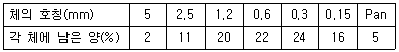
- 1.0
- 2.63
- 2.77
- 3.15
(정답률: 59%)
53. 콘크리트용으로 사용하는 골재의 물리적 성질은 KS F 2527(콘크리트용 골재)의 규정에 적합하여야 한다. 다음 중 부순 잔골재의 품질을 위한 시험항목이 아닌 것은?
- 안정성
- 마모율
- 절대건조밀도
- 입형판정 실적률
(정답률: 46%)
54. 아스팔트의 성질에 대한 설명으로 틀린 것은?
- 아스팔트의 비중은 침입도가 작을수록 작다.
- 아스팔트의 비중은 온도가 상승할수록 저하된다.
- 아스팔트는 온도에 따라 컨시스턴시가 현저하게 변화된다.
- 아스팔트의 강성은 온도가 높을수록, 침임도가 클수록 작다.
(정답률: 50%)
55. 아스팔트의 분류 중 석유 아스팔트에 해당하는 것은?
- 아스팔타이트(asphaltite)
- 록 아스팔트(rock asphalt)
- 레이크 아스팔트(lake asphalt)
- 스트레이트 아스팔트(straight asphalt)
(정답률: 61%)
56. 아래의 표에서 설명하는 암석은?
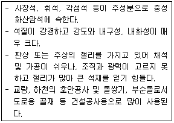
- 안산암
- 응회암
- 화강암
- 현무암
(정답률: 41%)
57. 실리카 퓸을 콘크리트의 혼화재로 사용할 경우 다음 설명 중 틀린 것은?
- 단위수량과 건조수축이 감소한다.
- 콘크리트 재료분리를 감소시킨다.
- 수화 초기에 C-S-H겔을 생성하므로 블리딩이 감소한다.
- 콘크리트의 조직이 치밀해져 강도가 커지고, 수밀성이 증대된다.
(정답률: 59%)
58. 시멘트 콘크리트의 워커빌리티(workability)를 증진시키기 위한 혼화재료가 아닌 것은?
- AE제
- 분산제
- 촉진제
- 포졸란
(정답률: 54%)
59. 터널 굴착을 위하여 장약량 4kg으로 시험발파한 결과 누두지수(n)가 1.5, 폭바반경(R)이 3m이었다면, 최소저항선 길이를 5m로 할 때 필요한 장약량은?
- 6.67kg
- 11.1kg
- 18.5kg
- 62.5kg
(정답률: 23%)
60. 골재의 함수상태에 대한 설명으로 틀린 것은?
- 골재의 표면수는 없고 내부 공극에는 물로 차있는 상태를 골재의 표면건조포화 상태라고 한다.
- 골재의 표면 및 내부에 있는 물 전체 질량의 절대건조상태 골재 질량에 대한 백분율을 골재의 표면수율이라고 한다.
- 표면건조포화상태의 골재에 함유되어 있는 전체 수량의 절대건조상태 골재 질량에 대한 백분율을 골재의 흡수율이라고 한다.
- 골재를 100~110℃의 온도에서 일정한 질량이 될 때까지 건조하여 골재알 내부에 포함되어 있는 자유수가 완전히 제거된 상태를 골재의 절대건조상태라고 한다.
(정답률: 53%)
4과목: 토질 및 기초
61. A점토층이 전체압밀량의 99%까지 압밀이 이루어지는 데 걸린 시간이 10년이었다면 B점토층의 배수거리와 압밀게수가 압밀계수가 다음과 같을 때 99%의 압밀이 이루어지는 데 걸리는 시간은? (단, B점토층의 배수거리(H)는 A점토층의 2배이고, 압밀계수(Cv)는 A점토층의 3배이다.)
- 20/3 년
- 40/3 년
- 20/9 년
- 40/9 년
(정답률: 50%)
62. 다음 말뚝의 지지력에 대한 설명으로 틀린 것은?
- 말뚝의 지지력을 추정하는 데 말뚝 재하시험이 가장 정확하다.
- 말뚝에 부(負)마찰력이 생기면 지지력이 감소한다.
- 항타 공식에 의한 말뚝의 허용지지려을 구할 때 안전율을 3으로 한다.
- 연약한 점토지반에 대한 말뚝의 지지력은 항타 직후보다 시간이 경과함에 따라 증가한다.
(정답률: 55%)
63. 다음 토압에 관한 설명 중 옳지 않은 것은?
- 어떤 지반의 정지토압계수가 1.75라면 이 흙은 과압밀상태에 있다.
- 일반적으로 주동토압계수는 1보다 작고 수동토압계수는 1보다 크다.
- Coulomb 토압이론은 옹벽배면과 뒷채움 흙사이의 벽면 마찰을 무시한 이론이다.
- 주동토압에서 배면토가 점착력이 있는 경우는 없는 경우보다 토압이 적어진다.
(정답률: 56%)
64. 다짐에 대한 설명 중 틀린 것은?
- 세립토가 많을수록 최적 함수비는 증가한다.
- 다짐에너지가 클수록 최적 함수비는 감소한다.
- 세립토가 많을수록 최대건조단위 중량은 증가한다.
- 다짐곡선이라 함은 건조단위 중량과 함수비 관계를 나타낸 것이다.
(정답률: 50%)
65. 시료채취기(sampler)의 관입깊이가 100cm이고, 채취된 시료의 길이가 90cm이었다. 채취된 시료 중 길이가 10cm 이상인 시료의 합이 60cm, 길이가 9cm 이상인 시료의 합이 80cm이었따면 회수율과 RQD는?
- 회수율 = 0.8, RQD = 0.6
- 회수율 = 0.9, RQD = 0.8
- 회수율 = 0.9, RQD = 0.6
- 회수율 = 0.8, RQD = 0.75
(정답률: 49%)
66. 흙댐 등의 침윤선(Seepage line)에 관한 설명으로 옳지 않은 것은?
- 침윤선은 일종의 유선이다.
- 친윤선은 일종의 등압선이다.
- 침윤선은 일종의 자유수면이다.
- 침윤선의 형상은 일반적으로 포물선으로 가정한다.
(정답률: 45%)
67. 그림과 같은 성층토(成層土)의 연직방향의 평균투수계수(Kv)의 계산식으로 옳은 것은? (단, H1, H2, H3, … : 각토층의 두께, k1, k2, k3, … : 각토층의 투수계수)
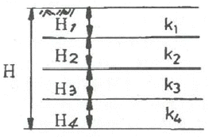
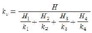
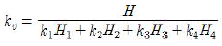
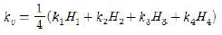
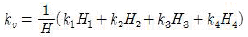
(정답률: 59%)
68. 기초의 지지력을 결정하는 방법이 아닌 것은?
- 평판재하시험 이용
- 탄성파시험결과 이용
- 표준관입시험결과 이용
- 이론에 의한 지지력 계산
(정답률: 47%)
69. 다음 중 사면의 안정해석방법이 아닌 것은?
- 마찰원법
- 비숍(Bishop)의 방법
- 펠레니우스(Fellenius) 방법
- 테르자기(Terzaghi)의 방법
(정답률: 59%)
70. 다음 삼축압축시험의 응력경로 중 압밀배수 시험에 대한 것은?
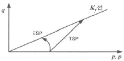
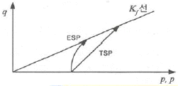
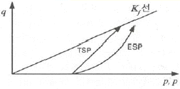
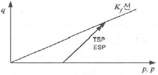
(정답률: 44%)
71. 말뚝 지지력 공식에서 정적 및 동적 지지력 공식으로 구분할 때, 정적 지지력 공식으로 구분된 항목은 어느 것인가?
- Terzaghi 공식, Hiley 공식
- Terzaghi 공식, Meyerhof의 공식
- Hiley 공식, Engineering News 공식
- Engineering News 공식, Meyerhof의 공식
(정답률: 54%)
72. 얕은 기초의 파괴 영역에 대한 아래 그림의 설명으로 옳은 것은?
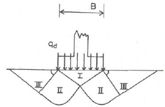
- 영역 Ⅲ은 수동영역이다.
- 파괴순서는 Ⅲ→Ⅱ→Ⅰ이다.
- 국부전단파괴의 형상이다.
- 영역 Ⅲ에서 수평면과 45°+(ø/2)의 각을 이룬다.
(정답률: 47%)
73. 포화된 점토지반에 성토하중으로 어느 정도 압밀된 후 급속한 파괴가 예상될 때, 이용해야 할 강도정수를 구하는 시험은?
- CU-test
- UU-test
- UC-test
- CD-test
(정답률: 44%)
74. 어떤 모래의 비중이 2.78, 간극율(n)이 28%일 때 분사현상을 일으키는 한계동수경사는?
- 2
- 4.5
- 0.78
- 1.28
(정답률: 51%)
75. 어느 포화된 점토의 자연함수비는 45%이었고, 비중은 2.70이었다. 이 점토의 간극비(e)는?
- 1.22
- 1.32
- 1.42
- 1.52
(정답률: 45%)
76. 유선망의 특성에 관한 설명 중 옳지 않은 것은?
- 유선과 등수두선은 직교한다.
- 인접한 두 유선 사이의 유량은 같다.
- 인접한 두 등수두선 사이의 동수경사는 같다.
- 인접한 두 등수두선 사이의 수두손실은 같다.
(정답률: 50%)
77. Mohr의 응력원에 대한 설명 중 틀린 것은?
- Mohr의 응력원에서 응력상태는 파괴포락선 위쪽에 존재할 수 없다.
- Mohr의 응력원이 파괴포락선과 접하지 않을 경우 전단파괴가 발생됨을 뜻한다.
- 비압밀비배수 시험조건에서 Mohr의 응력원은 수평축과 평행한 형상이 된다.
- Mohr의 응력원에 접선을 그었을 때 종축과 만나는 점이 점착력 C이고, 그 접선의 기울기가 내부마찰각 ø이다.
(정답률: 46%)
78. 입도분석 시험결과가 아래 표와 같다. 이 흙을 통일분류법에 의해 분류하면?
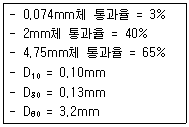
- GW
- GP
- SW
- SP
(정답률: 50%)
79. 다음 중 피어(pier) 공법이 아닌 것은?
- 감압공법
- Gow 공법
- Benoto 공법
- Chicago 공법
(정답률: 46%)
80. 토질 종류에 따른 다짐 곡선을 설명한 것 중 옳지 않은 것은?
- 점성토에서는 소성이 클수록 최대건조단위 중량은 작고 최적함수비는 크다.
- 조립토에서는 입도분포가 양호할수록 최대건조단위 중량은 크고 최적함수비는 작다.
- 조립토일수록 다짐 곡선은 완만하고 세립토일수록 다짐 곡선은 급하게 나타난다.
- 조립토가 세립토에 비하여 최대건조단위 중량이 크게 나타나고 최적함수비는 작게 나타난다.
(정답률: 53%)
콘크리트는 수분과 반응하여 경화되는 재료이기 때문에 수분이 부족하면 경화가 불완전하게 일어나고, 수분이 과다하면 강도가 떨어지는 등의 문제가 발생할 수 있습니다. 따라서 콘크리트를 제작할 때는 적정한 수분량을 유지하면서 수분증발을 방지하기 위해 촉진제를 사용하는 것이 원칙입니다.